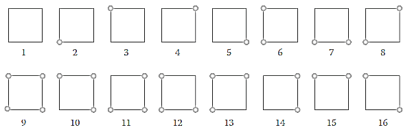
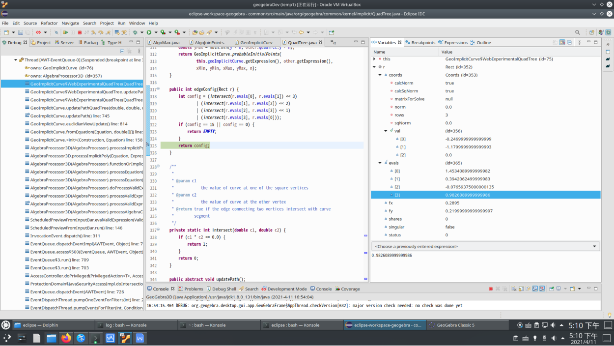
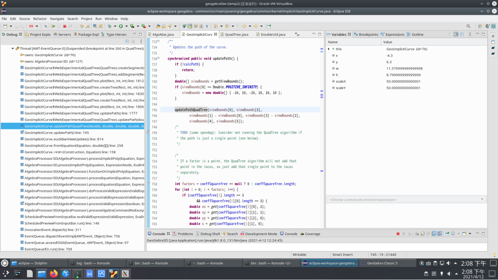
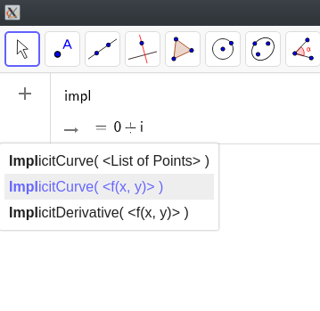

接上文：zhihu_用Geogebra绘图怎样去掉中间蓝色的线.html ， 我对照算法 http://shamshad-npti.github.io/implicit/curve/2015/10/08/Implicit-curve/ 进一步跟踪下代码，看下为啥 x^2+y^2=x>0 会在 x<0 区域产生意外图像。
算法对于形如f(x,y)=0 的 implicit Curve， 主要是把绘图区域递归地分成很多小方块区域，把这些区域用四叉树数据结构组织起来，计算每个小方块四个顶点的坐标以及计算（eval） 顶点处f(x,y) 的值，f(x,y) 值的正负号可有如下16种组合类型：

每个小方块在下图代码里用 Rect 类型的对象 rect 表示：


下图intersect函数实际上就是两数相乘取正负号;
下图 edgeConfig 函数，当出现 16 种情况中的 1或9号 ，四个顶点符号相同，全负或全正，则4个intersect 都返回0，config值为二进制 0000 ，返回Empty;
若出现8或16号情况，相对顶点同正负，相邻顶点相反，则4intersect 都返回 1, config 值为 二进制1111, 十进制15,edgeConfig 也返回 Empty

关于 4 个顶点位置对应变量名, 下图QuadTree 类里面的 createSegment 函数中 tl,tr,br,bl 应该是 topLeft, topRight,bottomRight,bottomLeft 的意思，结合调试中显示的x1,x2,y1,y2数值，我画了下面示意图，显示四个顶点坐标和此点函数eval值的对应，方便理解后面代码细节：
tl tr evals[0] evals[1] (x1,y2) (x2,y2) bl br evals[3] evals[2] (x1,y1) (x2,y1) |

createSegment 里面根据 gridType 生成线段，gridType 源于前述16种类型，不过合并了 （1,9）（2,10）... 等对称类型，代码里可以看出是通过大于等于8 后就按位取反实现，所以只须考虑 1到8这8种类型;而前述 1号和8号，edgeConfig 返回Empty，也是不需要plot的，所以最终只考虑 T0001到T0110 这六种情况。
public int config(Rect r) {
int config = 0;
for (int i = 0; i < 4; i++) {
config = (config << 1) | sign(r.evals[i]);
}
return config >= 8 ? (~config) & 0xf : config;
}
下图对应了 T0001 情况，对应的是16种类型中的 2或10 类型，既bl 点的函数值和其余3点相反，需要在 tl-bl 这条边(左边)上插值计算一个y坐标，以及 bl-br 这条边（底边）上插值计算一个x 坐标，然后可以得到一条从 (x1,interplolate(bl,tl,y2,y1)
到(interpolate(bl,br,x1,x2),y2)的线段，即pts[0]点到pts[1]点的线段。
tl tr (x1,y2) (x2,y2) (x1,interplolate(bl,tl,y2,y1) bl br (x1,y1) (x2,y1) (interpolate(bl,br,x1,x2),y2) |
在createSegment 函数最后还要检验小方块内函数连续性，对于 T0001情况，标准是
q1 = minAbs(bl, tl);
q2 = minAbs(bl, br);
// check continuity of the function between P1 and P2
double p = Math.abs(this.geoImplicitCurve
.evaluateImplicitCurve(pts[0].x, pts[0].y, factor));
double q = Math.abs(this.geoImplicitCurve
.evaluateImplicitCurve(pts[1].x, pts[1].y, factor));
if ((p <= q1 && q <= q2)) {
return VALID;
}
return EMPTY
为了揭示为啥会产生在 x<0 部分的图像，我们设置如下断点：

看看断点处的变量值：


所以我们看到，函数 x^2+y^2-(x>0) 在(0,0) 点附近显然是不连续的，但通过了简单的连续性测试。
算法介绍的局限性部分也提到了Singularity，我不确定是否指的就是这里的（0,0）点; 代码里有些我看不太明白的注释部分，貌似和绘制单独的点有关，Rect 类型也有一个.Singular属性（本文第一张代码截图里有显示），我不确定是否和此问题相关。
但我觉得，产生 f(x,y)=x^2+y^2-（x>0） 这样奇怪函数的原因只是在于用户想画个右半圆，但geogebra 里面ImplicitCurve函数貌似只带一个f(x,y)函数参数，默认如下图基于viewBound(画布可见区域，视界？)绘制。如果ImplicitCurve能扩展为加上“定义域”参数，把x>0 放入定义域参数，这个是不是就解决了？

